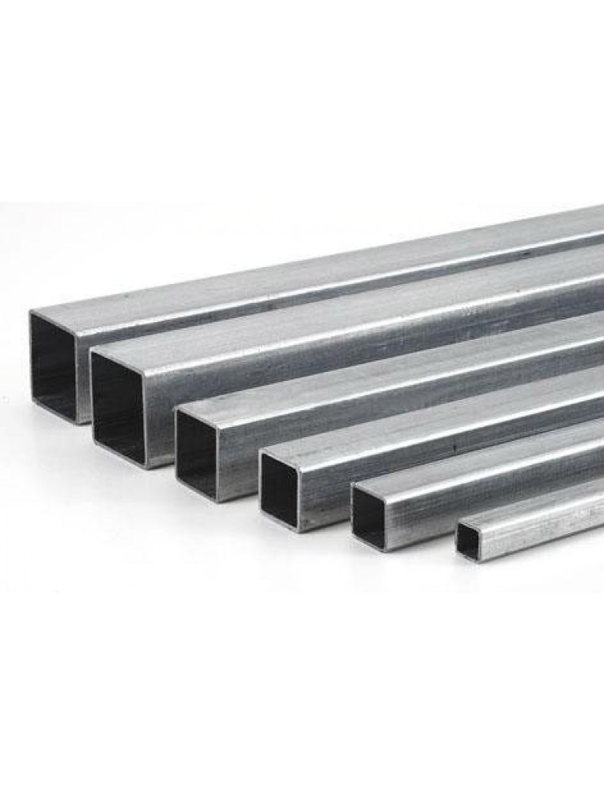
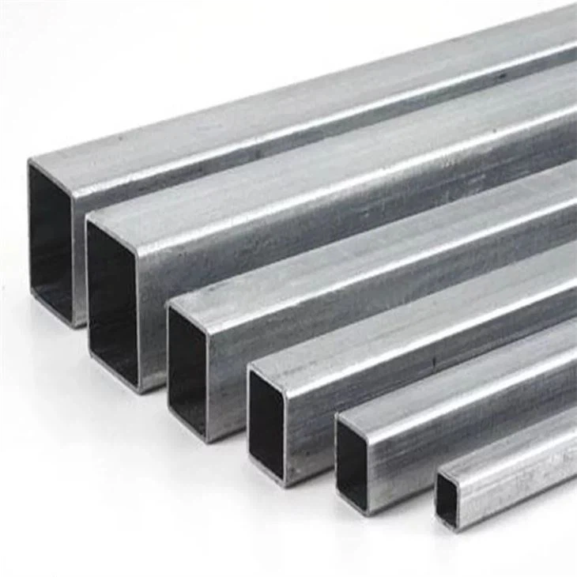
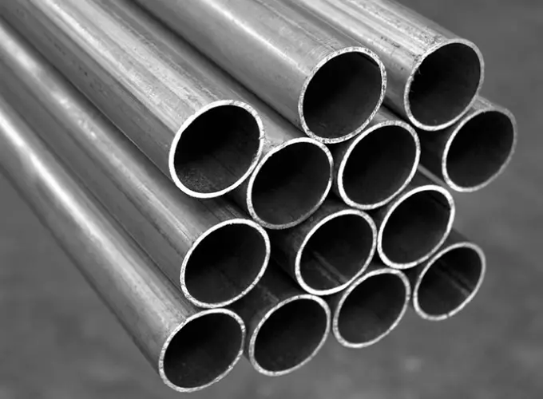
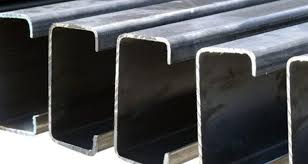

Modelos de tubos

Tubo Cuadrado
Galvanizado y Negro
Espesor
- Calibre 18 → 1.20 mm Calibre 16 → 1.50 mm Calibre 14 → 1.90 mm Calibre 12 → 2.45 mm
Medidas
- 1x1, 1.5x1.5, 2x2, 3x3, 4x4

Tubo Rectangular
Galvanizado y Negro
Espesor
- Calibre 18 → 1.20 mm Calibre 16 → 1.50 mm Calibre 14 → 1.90 mm Calibre 12 → 2.45 mm
Medidas
- 2x1, 3x2, 4x2, 6x2

Tubo Redondo
Galvanizado y Negro
Espesor
- Calibre 18 → 1.20 mm Calibre 16 → 1.50 mm Calibre 14 → 1.90 mm Calibre 12 → 2.45 mm
Medidas
- 1', 1.5', 2', 3'

Costaneras
Galvanizado y Negro
Espesor
- Calibre 18 → 1.20 mm Calibre 16 → 1.50 mm Calibre 14 → 1.90 mm
Medidas
- 3x2, 4x2, 5x2, 6x2, 7x2